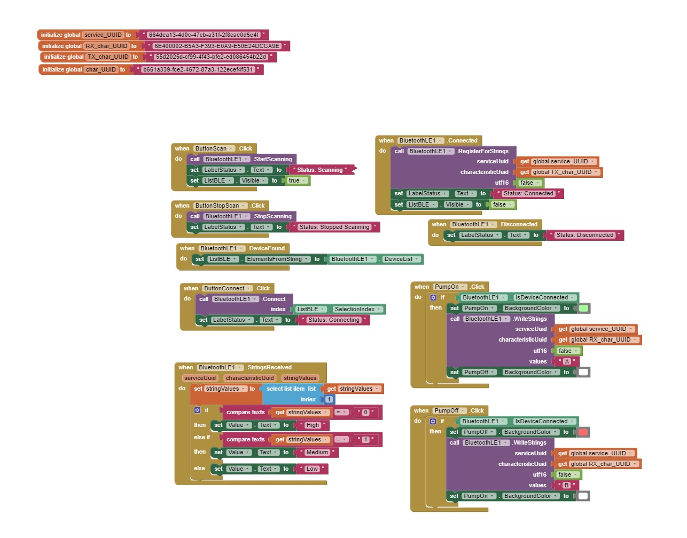
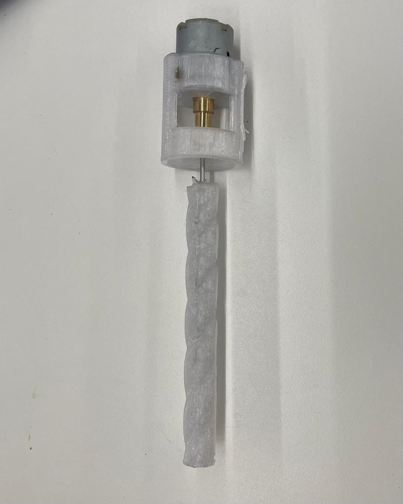
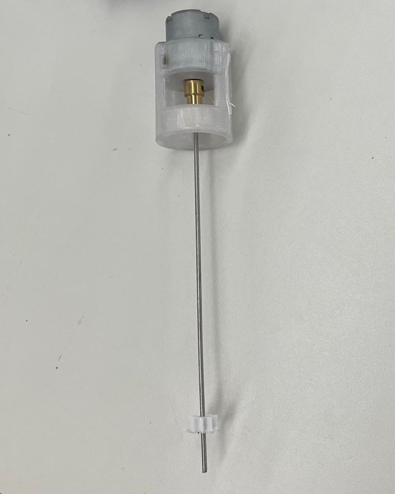
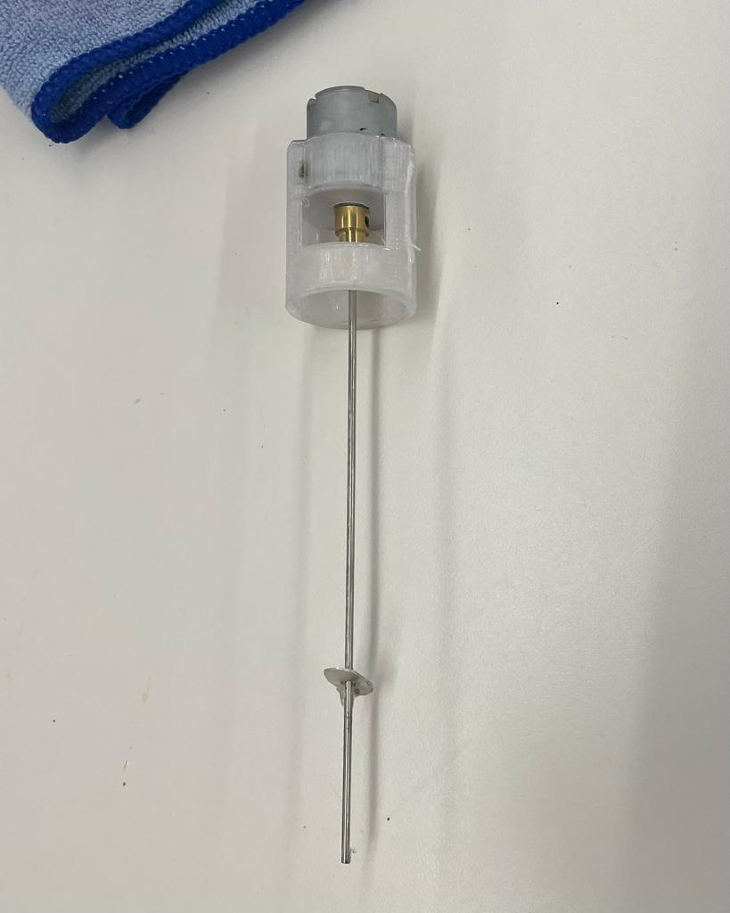
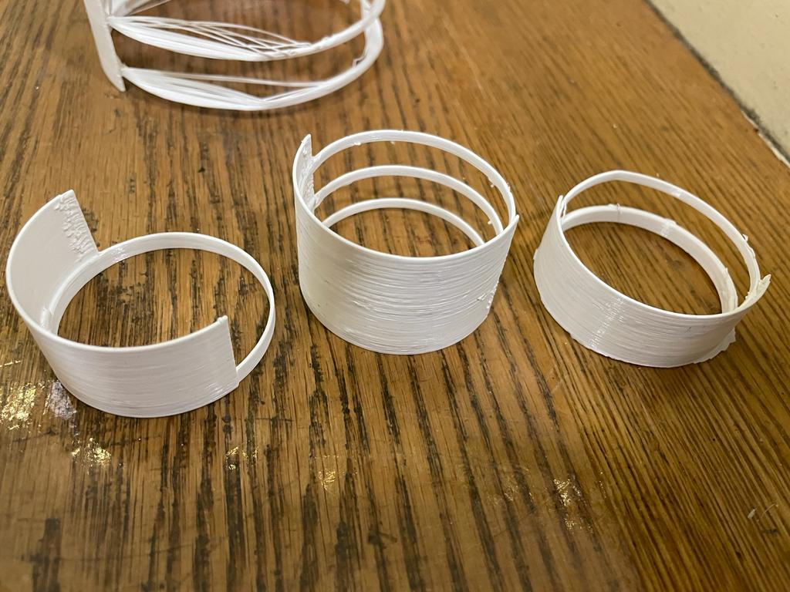
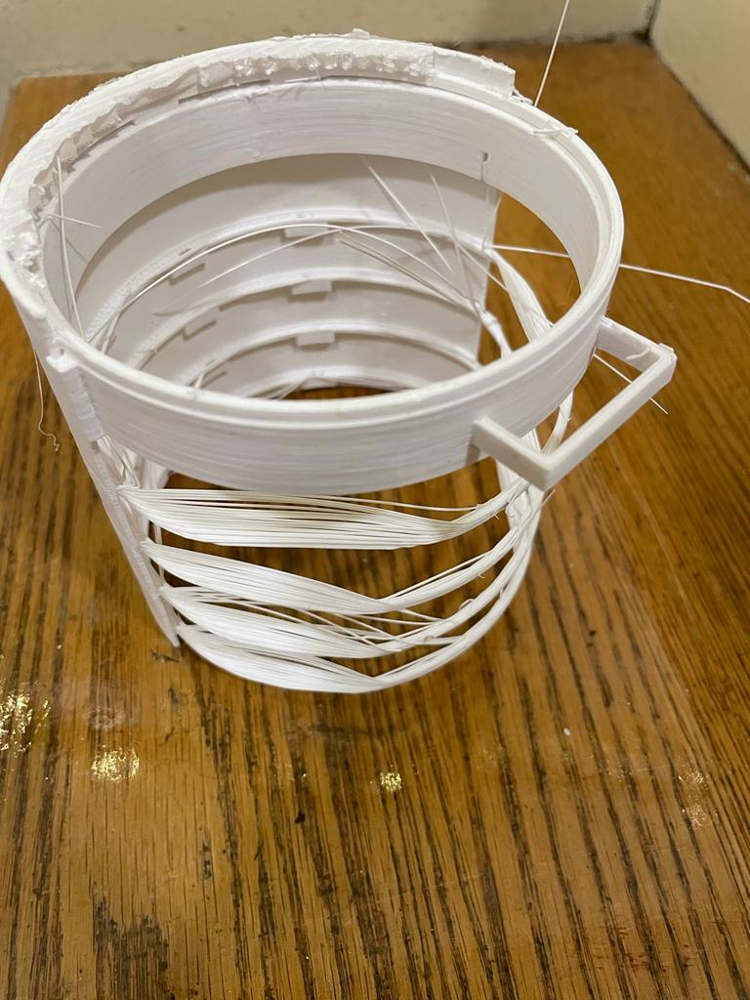
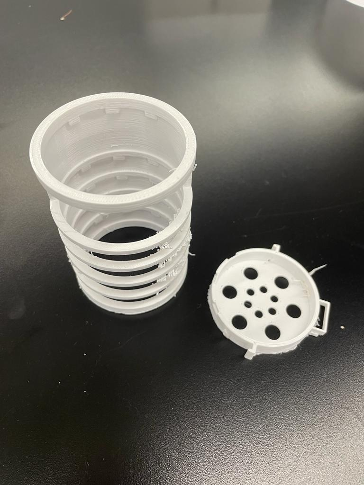
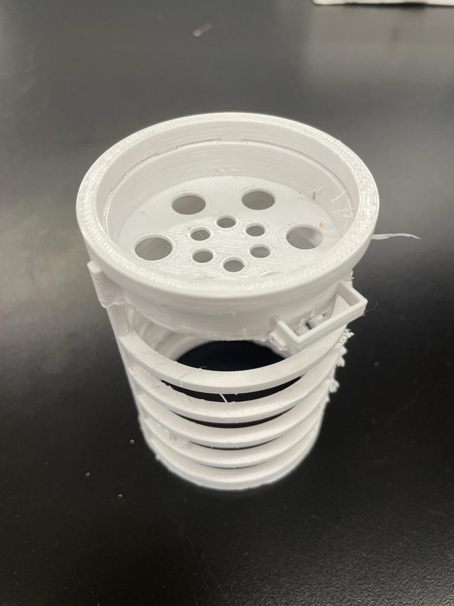

WEEK 12: MVP PROJECT AND DESIGN PROCESS
<br>
<b> Overall design </b>
The goal for my final project was to create a design for a small scale water distribution system while keeping it as modular as possible. This modularity would allow for increased user agency in the maintenance and monitoring of the water system. For example, by breaking a pump down to it’s simplest components, users would only have to check a few components if there was ever a malfunction. Additionally, modularity is in line with sustainability. This is shown clearly with respect to bio filters, which often involve many different components that can be sourced locally but are always packaged as one filter (i.e. impossible to replace one part alone without replacing the whole filter). While this idea of modularity remained present and the underlying goal throughout the design process, the ideation from start to finish changed drastically. Below is a schematic of my initial goal versus final. This was compiled with an application that communicates with the water system via bluetooth and allows the user to monitor water levels as well as turn off and on the pump accordingly
For learning purposes, I have divided my final project development page based on learning outcomes and specific skills acquired throughout the class. For a summary of the final project, video demo, as well as a brief explanation of each component, please click [here](../FinalProject/index.html).
<u> 3D printing and prototyping process</u>
3D printing was an essential part of the prototyping process for both the fixtures as well as the design of the filter itself. As explained before, I wanted to design a filter with removable drawer-like compartments that would contain individual components typically packaged within a filter. This was simple in theory, however, in practice proved much more challenging; I needed something that would be 1) water proof 2) compartments that are easy to remove for anyone (i.e not overly complex mechanisms) and 3) Compartments that were compact so as to not allow for water leakage. Points 2) and 3) proved especially challenging as every time I thought of a design that fulfilled one criteria it often went against the other. In order to try and satisfy criteria one, I decided to use PETG filament for my 3D prints, which, according to multiple online sources, does a pretty good job at being water safe and water proof.
Little things with the 3D printing proved difficult as well. It took me a while to realize that my prints kept failing because the optimal PETG settings are fairly different from those of PLA. Once I changed the setting to 230 nozzle temp and around 85 for bed temp it worked much better! In addition, since I wanted my compartments to take a “press-fit” form to aid with criteria 3), it was important to get the dimensions as close as possible. This was tough because I had never realized before that there is a “kerf” equivalent in 3D printing, meaning that we need to account for the space taken up by filament and perhaps space that has been shrunk from heating. I’m still not exactly sure what a good number for this is but I settled on 0.5 mm as a conservative estimate.
Below is my first 3d print and final 3d print, with each component laid out separately
The final STL file can be found on the [Final Project Page](../FinalProject/index.html)
<u>Attaching Mesh to filter </u>
Originally, I had planned to directly incorporate mesh fitting into my design, however after discussing with Nathan I realized that the 3D printer was not optimized for this sort of design (shown below). I decided to use stainless stell metal mesh filter with 0.18mm holes. This also went along nicely with my underlying modularity goals as it would be easy and cheap to replace. I decided, therefore, that the best way to attach this metal meshes would be a press fit methodology with an additional printed ring to squeeze on top of the mesh. After running a few test prints and trial and error, I managed to get the right weighting, diameter and thickness to hold the mesh in place.
<u> Filter components </u>
Knowing that the actual components were something that I could not reproduce within the lab, I decided to order this 5-stage filter on amazon comprised of the following components: activated carbon, resin, silica sand, infrared ceramic balls, mineral sand, and mineral stones. I decided to follow a similar ratio as the one presented in the available filter as my goal was not to change the make up of filters (as I am no expert in this area) but simply focus on their modularity. While I did not get around to this I would eventually like to test my filter out with a simple water quality testing kit to understand if my filter is actually sufficient in removing harmful bacteria, without any fancy membranes or osmosis procedure as offered by many filters nowadays. Additionally, it would be interesting to test the effectiveness of locally sourced materials vs manufactured materials with respect to components such as sand or gravel.
<u> Filter Coating </u>
After putting together my compartmentalized filter and testing it, I realized that it was still prone to leaks and that the PETG filament was not completely waterproof. This was pretty disappointing as I realized this relatively late into the design process where it was too late to explore other proclaimed waterproof filaments. I decided therefore to try coating it with different materials. The first material I tried was acrylic (FIND NAME OF COATING) , which suggested given that he uses it for coating electrical materials and protecting them against moisture. This worked okay as it reduced leaks but there were still a significant amount. I next tried (FIND NAME), another type of coating that uses silicone instead. While I wasn’t exactly sure of all the individual components and uses of this coating material, a quick google search showed that silicone is generally considered water safe. This test run yielded better results, and had slightly less leaking. Overall, I would not say that the filter is 100% water proof. In the future I would need to explore the effect of thickness of the coating, as well as look into other alternatives that are available.
<u> Water + Cup design </u>
Given that this water system is meant to be for small scale use, I decided to build a start to end flow of water. This meant that I wanted to show the process from the tank all the way to the cup. Because of this, I thought that by designing the filter so that it would act as an add-on component to a cup stand would help make the design more human. Below are my CAD drawings for the design and a photo of the components together.
<u> Input electronic devices </u>
Originally I had hoped to use capacitive sensors due to their low cost and easy installation (you only really need to strips of copper and some wire), however I soon found that the seemingly user friendly aspect of these capacitive sensors could not outweigh the potential loss in accuracy in this case. As much as I tried to play around with the capacitors to increase accuracy, I could not decrease the immense variability. At times the readings would jump from 90 ml to 300 ml. The original code I had for this type of sensor is shown below:
<pre><code class="language-arduino">
//intervals for sensor
int read_high;
int read_low;
int diff;
// Change to appropriate pin on arduino
int result; //variable for the result of the tx_rx measurement.
int analog_pin = 32;
int tx_pin = 33;
int txValue;
// I initiate the "last" and "current" states of the three buttons, with the last always being LOW at the beggining of the program
int lastState1 = LOW;
int currentState1;
// Define variables to store BME280 readings to be sent
float waterlevel;
digitalWrite(tx_pin,HIGH); // Step the voltage high on conductor 1.
read_high = analogRead(analog_pin); // Measure response of conductor 2.
delayMicroseconds(100); // Delay to reach steady state.
digitalWrite(tx_pin,LOW); // Step the voltage to zero on conductor 1.
read_low = analogRead(analog_pin); // Measure response of conductor 2.
diff = read_high - read_low; // desired answer is the difference between high and low.
waterlevel = ((diff-857)/1.1);
Serial.print("Result: ");
Serial.println(waterlevel);
delay(1000);
</code></pre>
I decided, therefore, to switch to a soil moisture premade sensor. While this automatically increased the accuracy and reduced variability of readings, there was a large associated downside. Apart from decreasing modularity and accessibility factors, I was greatly limited by the length of the soil moisture sensor. It was only about 10 cm long but my prefab tank (aka bucket I found in the PS 70 lab) was over 25 cm. With the capacitive sensors I could customize just about everything including the length and therefore recorded water level. With this limitation in mind I decided to evolve my original design such that, instead of a direct water level reading the app would output a generic level reading: “High water level”, “medium water level”, or “Low water level” with an additional warning sign for the low level water to turn off the pump immediately.
This is a great example of a limitation that allowed me to remember the core driving factors of my final project. In this case I believe this limitation helped allow me to remember my project’s focus and recenter. This adjusted feature is easier for the user to understand (rather than arbitrary water level numbers).
<u> Arduino code: </u>
The second challenge I tackled this week was attempting to code the app and ESP32 for my bluetooth information. The goal behind this was to have a fully functioning app that would receive water level data from a sensor in the water system and also have two buttons to turn off and on the pump. I thought about programming it so that the pump would automatically shut off after a certain amount but I realized since this was a small scale water system it would make more sense to prioritize user autonomy so the user could turn off the pump whenever they didn't want to use it regardless of water level.
I started first with the Arduino code as I wanted to make sure the Bluetooth component was all settled before moving on to the ap development. I decided to follow THIS Bluetooth Low Energy (BLE) tutorial. Ultimately, BLE seemed like the more appropriate option given that I would not be sending large amount of data, and want to focus on more energy efficient and cost-effective designs when applicable.
The most confusing part for me was understanding the difference between a Server and Client. I tried to equate it to the sender and receiver from ESP radio which ended up confusing me more since in my case, the app sends a signal to turn off and, on a pump, but the esp32 sends data regarding the water level so there is a two-way transfer of data. After doing more research, I realized that Server and Client only relate to the actual Bluetooth connect. The server advertises its existence while the client scans for devices and finds it. I therefore decided to make my phone the client and my esp32 the server.
I first tested the esp32 with my phone using nRF connect as shown below. My phone was able to discover the esp32 easily, however when I went to the read write function and went to send an “A” which corresponds to the Boolean “True” in my code (thereby turning the pump on), the esp32 received no value. I figured this was an issue with my phone and tried by trial and error to torubleshoot by sending different values, changing it to read and write, and trying to overwrite the esp32 so the value sent regardless if it was accepted. I eventually looked more closely at my code and realized that the error was how I initialized my variable that would be accepting this value. It was listed as an integer rather than a Boolean. 4 hours of debugging later and I had solved it! This exercise helped my understanding of code a lot, especially in working with PK to understand the different forms in which information can be sent (character, string, etc.).
<u> APP Development </u>
I started out using the Thunkable app creator as it was marketed as "user friendly" and requiring little to no code. However, I soon realized it was only compatible with Android. I switched to the MIT app inventor site which claimed that it was compatible with IOS. I followed this super helpful tutorial and imported the demo apo code. Figuring out stracth and deciphering what variables to change was slightly difficult but I think I got it in the end:
However, when I went to test this on my Iphone I kept getting this error:
When I googled and searched a little further I realized that while MIT app inventor is compatible with demo testing on IOS, it's bluetooth features are currently only available on Android. My family has an old android phone that I will try and revive over thanksgiving, but in the mean time I will come up with a back up plan
After acquiring an old android phone from a friend I was able to test out the Bluetooth feature on the phone. I would connect the phone to the esp32 through NRF connect as shown above and then open the app on my phone using the AI companion feature which essentially allows you the project the app on your phone through WIFI before it is published in the app store (which can be a very lengthy process). While each of these components worked individually, I found that every time I got the app companion to load it would disconnect from Bluetooth. I spent hours trying to debug both my Arduino code and app coding before I realized what the error was: in order to use an app that connect to the esp32 using Bluetooth, you must include code such that you can connect to the Bluetooth through the app. For some reason the app did not recognize third party connections.
After adding in code to scan, stop scanning, connect and disconnect from a device (following THIS tutorial), I had my first successful connection with the app and ESP32!!

<u> Prototyping part 2 </u>
Pump
Perhaps one of my biggest obstacles for this project was finding a way to simplify the construction of a water pump. It had to be strong enough to be able to suck up water a vertical distance of 20 cm (i.e. length of bucket more or less) through a diameter of 15 cm, but simple enough such that it could operate off of one of the motors that we have available in class. I did research on simple DIY pumps and all seem to had the following in common:
- Motor
- Shaft couple
- Axel with rotor/ propellor
Since there was variation in the type of rotor and motor used I figured I would have some flexibility in these choices as well… I was wrong.
<div class="row">
<div class="column">

</div>
<div class="column">

</div>
<div class="column">

</div>
</div>
<u> Overall conclusion: Motor was not strong </u>
Regardless of the design it appeared that the water was not being sucked up. I realized right towards the end that my focus might have been misplaced as I was trying hard to think of the most efficient rotor and axyl design. Instead, I should have looked more closely at the motor. I assumed that the motor I was using was adequate given that it had the same voltage rating as some others I had seen in videos (12V), however I completely neglected other factors such as torque. In hindsight I should have looked into using bigger and more powerful motors such as stepper motors, and looked at reducing the diameter of my piper more (i.e. ordered smalling pipes.)
Alternative
In the end the most feasible option for me was to use a submersible prefab fish tank available in the lab. While this is not ideal in terms of modularity, I created a structure such that it could be added and removed with ease if the pump broke.
<u> Connection and Integration </u>
Integration of the abovementioned components was key to ensuring successful modularity of my project. I had to strategically think about how each component would be incorporated so that it would be stable but also easily removable. In addition, I had to review what needed to be waterproof and water safe, as different components had different needs. The most important safety aspect was ensuring that all wires would not be exposed to wire. This proved to not be too challenging as most of the wires were well sealed already. I added the following fixture and used heat shrink to group wires together.
A collage of failures that didn't make it:
<div class="row">
<div class="column">
<img src="prototype1.jpeg" alt="prototype1" style="width:100%">
</div>
<div class="column">

</div>
<div class="column">

</div>
</div>
<div class="row">
<div class="column">

</div>
<div class="column">

</div>
<div class="column">
<img src="app.jpeg" alt="prototype1 print failed " style="width:60%">
</div>
</div>